Accomplishment Reports
A chronological log of tasks and proof of work during the MIS Office deployment.
During my first week on-the-job training at Management Information System Office, I was responsible for organizing and cleaning the office so we can work properly.
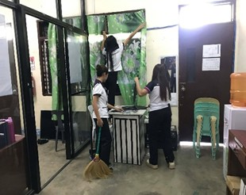
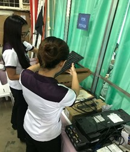
We scan the files and convert in as soft copy. The next day I print our MIS Coordinator revised syllabus.
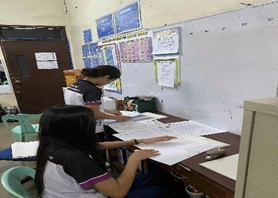
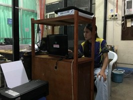
We are assigned to organize the bulletin board. I also assist my fellow OJT trainees in removing and organizing cable wires.
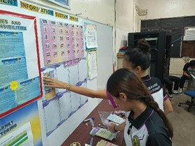
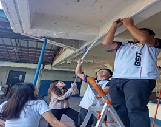
I assist my co-trainees in organizing wires, connecting it to the internet. I was assigned to encode e-sports player’s budget, and walk it to SSIT.
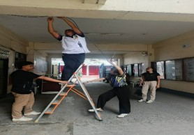
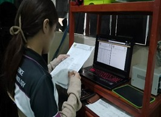
I was assigned to fix the header and footer of the document, because it doesn’t display in the print preview. The other day we provided effective assistance that helped complete the task smoothly.
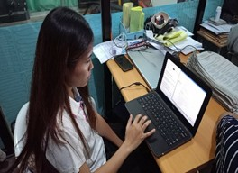
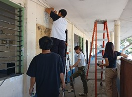
Assisted in organizing and arranging wires, tables, and the router for the upcoming intramurals of high school’s students.
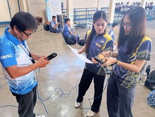
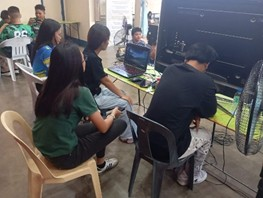
Last day of assisting with the e-sports players’ game, and the following days, we continue the removal of cables.
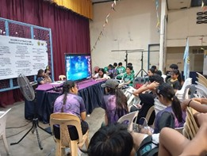
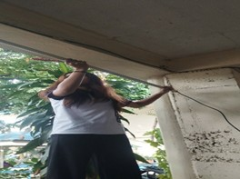
I’m processing the syllabus with our MIS Coordinator for review and approval.
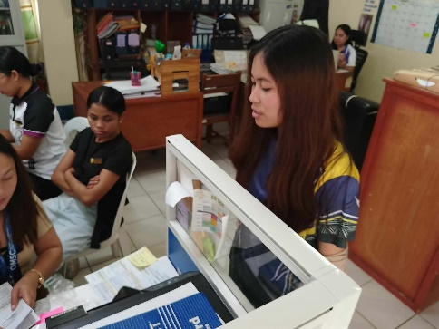
Configuring router, resetting to default, and changing user, password.
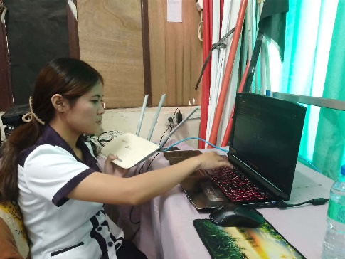
I’m doing network installation and checking each cable by connecting to internet.
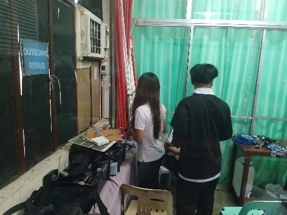
We are assigned to fix an internet connection issue and we manage to fix it in just a few minutes and the work continues.
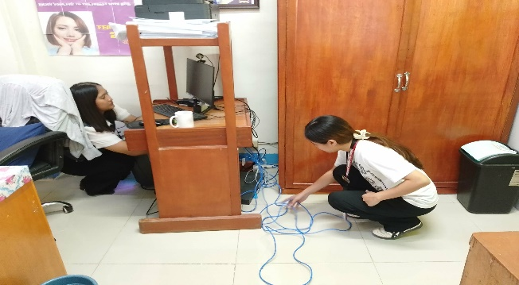
I’m organizing my portfolio and other paper works in the office and checking if there is anything to do.
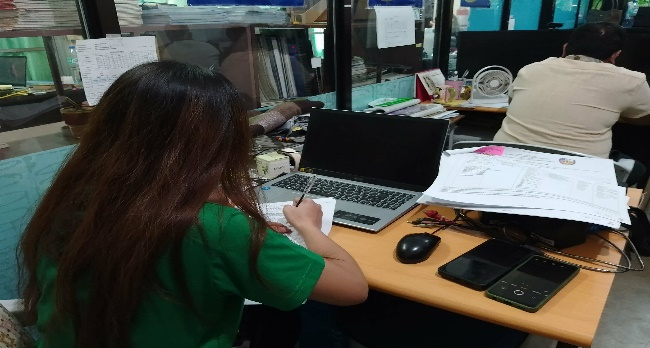